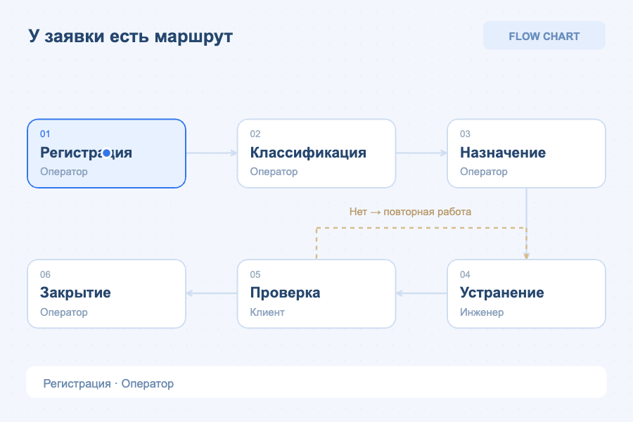

Лабораторная на 50 минут · 3 обязательных этапа: 25 + 35 + 40 = 100 баллов. Этапы 4–6 — дополнительные, без гонки на время.
Мастерская бизнес-процесса
Собери модель обслуживания заявки — от цели до эксперимента. Каждый этап сохраняется в твоём проекте.
Введи ник. Код группы нужен для работы с преподавателем.
Войти в мастерскую
Введи имя, чтобы сохранить результат. Для занятия с преподавателем добавь код своей группы.
Проект сохраняется после каждого этапа

Один процесс. Маршрут, данные, роли и результат.
Задание и регламент процесса
Сервисная заявка: от проблемы до результата
Клиент сообщает о неисправном компьютере. Оператор регистрирует, классифицирует и назначает заявку. Инженер устраняет проблему, клиент проверяет результат, оператор закрывает заявку. При неуспешной проверке работа возвращается инженеру.
По регламенту роли фиксированы. Длительности в минутах: регистрация 2, классификация 3, назначение 1, устранение 12, проверка 2, закрытие 1. Эксперимент: устранение за 6 минут.
Учебная модель: заявки не отправляются в настоящую службу. Симуляция — одна заявка, без очередей.